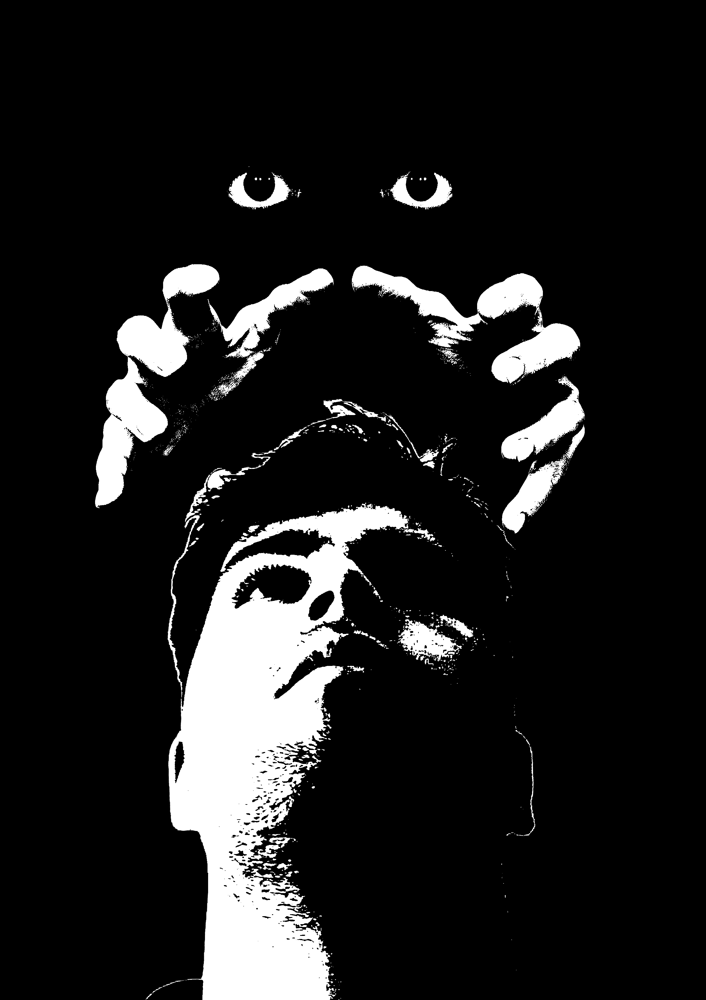

Projetos
Projetos 2025

Este projeto serve para imaginarmos como seria uma natureza distorcida ou com elementos não reais ou mitologicos.
Natureza Alternativa

Criação de uma imagem .png sem fundo totalmente preta para depois ser usada como base para um stencil.
Altocontraste

Neste projeto usei 3 pinturas conhecidas para fazer uma nova, é uma colagem de imagens.
Recriação de uma Pintura

Neste projeto usei 3 pinturas conhecidas para fazer uma nova, é uma espécie de colagem.
projeto D
Projetos 2026
Website interativo com carrossel dinâmico e estilo minimalista em tons neutros.
Projeto D

Aplicação web de gestão de tarefas com design centrado na clareza e simplicidade.
Projeto E

Prototipagem de interface para uma aplicação móvel de viagens sustentáveis.
Projeto F
Projetos 2027

Desenvolvimento de um microsite promocional com foco em tipografia e storytelling visual.
Projeto G

Design e implementação de uma galeria de arte digital com interface intuitiva.
Projeto H

Criação de um site de apresentação pessoal com animações de entrada suaves e navegação fluida.